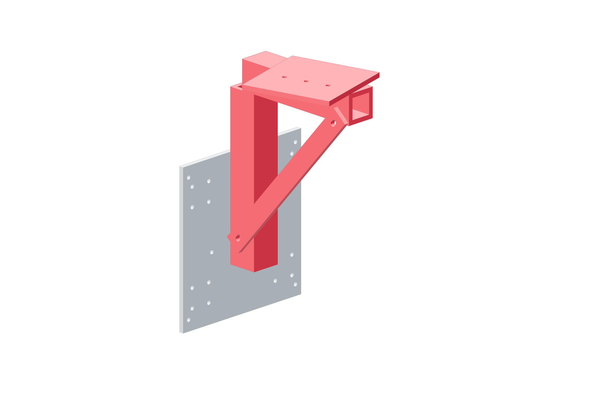

Structure / head73 / 179
Join the head support
The head support is metal extrusion and metal corner joints. It brings the yaw bearing backplate to the gimbal datum.
Add4040 × 225 mm · 4040 × 180 mm · z-head-diagonal · yaw-head-adapter · metal corner joints
Tools / setupSquare · 6 mm hex · temporary head support

- Support the Z carriage so it cannot fall while its belt is disconnected.
- Start the upright, crossbeam, metal diagonal and flat adapter at their CAD mounting stations.
- Square both members to the carriage and seat opposite joints progressively.
- Keep the support in place while the bearing backplate is assembled.
Ready when
Pushing the unloaded crossbeam by hand reveals no loose metal joint or unsupported end. Any movement at a bolted corner is a failed structure check. Correct that joint before hanging the gimbal.